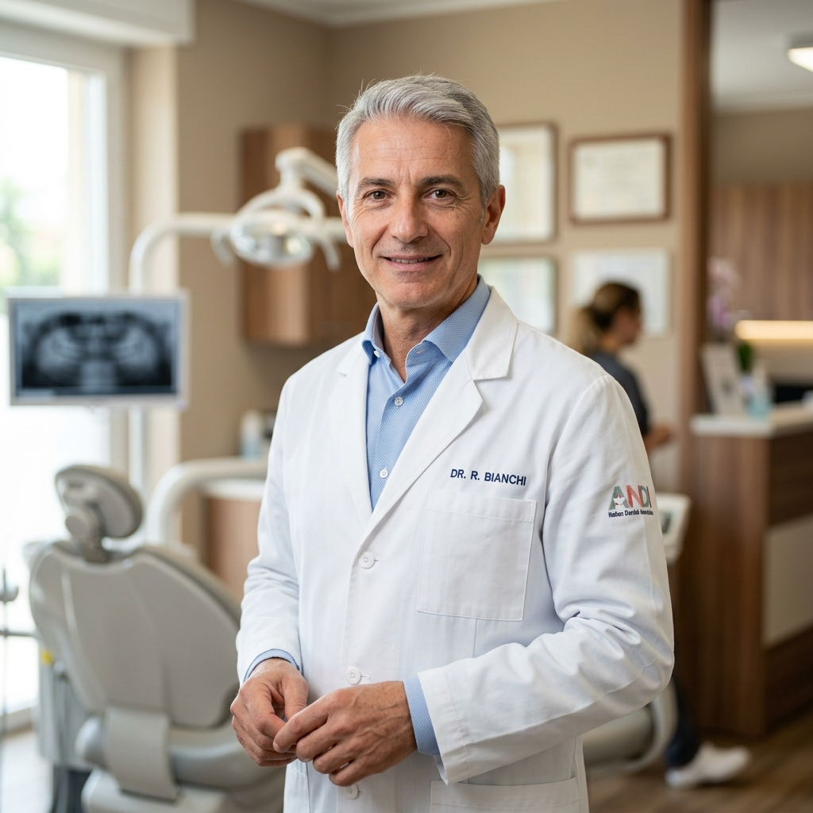
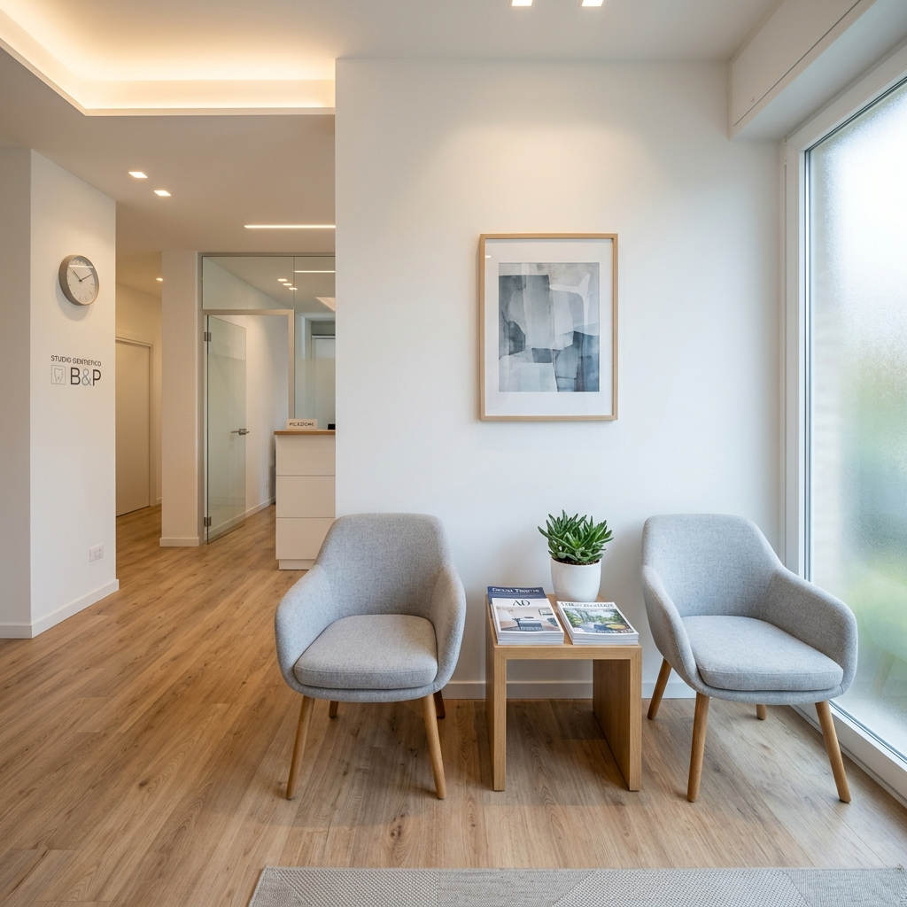

Chi siamo
Un dentista di riferimento per Pieve di Soligo e la Marca Trevigiana.
Un dentista di riferimento per Pieve di Soligo e la Marca Trevigiana.

Il dottore
Il Dott. Giovanni De Cecco è odontoiatra iscritto all'Albo della Provincia di Treviso. Con una lunga esperienza clinica, ha scelto di operare a Pieve di Soligo per offrire un servizio di prossimità alla comunità locale e ai paesi limitrofi della Marca Trevigiana.
Lo studio è organizzato per coprire le principali branche dell'odontoiatria: implantologia osteointegrata, chirurgia odontostomatologica, ortodonzia, odontoiatria estetica, parodontologia, conservativa, endodonzia, protesi e diagnostica radiografica digitale. Grazie ad apparecchiature moderne e all'avanguardia — tra cui l'ortopantomografia digitale — è in grado di offrire esami specialistici accurati e trattamenti di elevata qualità.
Il Dott. De Cecco crede in un'odontoiatria basata sull'ascolto, sulla trasparenza del piano di trattamento e sulla qualità dei materiali utilizzati. Tutto lo strumentario è costantemente controllato e sterilizzato, per assicurare al paziente il massimo dell'igiene e della professionalità.
I nostri valori
Ogni piano di cura viene spiegato in modo chiaro. Nessun trattamento inizia senza il tuo consenso informato.
Utilizziamo esclusivamente materiali certificati e tracciabili, provenienti da fornitori selezionati.
Dedichiamo tempo all'ascolto delle tue preoccupazioni, perché la fiducia è la base di ogni cura efficace.
Partecipazione costante a corsi di aggiornamento per offrire trattamenti basati sulle migliori evidenze scientifiche.
Aggiornamento professionale
Lo spazio dedicato ai corsi di aggiornamento, alle certificazioni e agli attestati del Dott. De Cecco.
Questa sezione verrà completata con i dettagli dei corsi di formazione, le certificazioni professionali e gli attestati di aggiornamento del Dott. De Cecco.
Lo studio
